Answer (first screen)
Video: Claude Prompts: Replace the Noun With Verbs, Then Assemble a Crew · DIY Smart Code · uploaded 2026-10-26 · 118 s
Topic (one line): To get more than the noun you asked for, restate the task as verbs, then have Claude assemble a crew of fields (including a red team) to do the work. This is range, one of Felix Rieseberg's four kinds of ambition.
Expert: Felix Rieseberg, Engineering Manager (EM) at Anthropic. His site says he has led engineering for Claude.ai, Cowork and Claude Code Desktop (written source, see quotes-sources), and he co-maintains Electron. Source post: How to be more ambitious: A tutorial for humans with models, felixrieseberg.com, 13 Oct 2026 (VERIFIED, saved in sources/src-felix-post.txt).
Feature the advice relies on: multi-agent setups, i.e. subagents, threads and orchestrators running parallel specialist roles. The best fit is Claude subagents (Claude Code and the Agent SDK). The post adds a second dependency: a computer that can install software, plus MCP connectors. Confidence: medium-high. See feature-docs-StbUAJvivDc.md.
Method (card in method-card-StbUAJvivDc.md): 1) Write the verbs of the deliverable. 2) Raise the stakes and name the crew: production, presentation, red team. 3) Have each field do its method, not imitate its voice. 4) Merge the results.
Argument in the speaker's order: S01 hook [00:00] → S02 range + multi-agent [00:10] → S03 nouns to verbs [00:25] → S04 assemble the crew [00:51] → S05 Alex Albert, Blender, 3D homepage [01:18] → S06 verbs, crew, no role-play [01:38] → S07 who joins first [01:52].
Five spoken quotes (caption-checked): - [00:00] "Ask Claude for a deck, and you get a deck." - [00:34] "A quarterly review isn't a deck. It's getting busy people to believe a story about cause and effect and to decide under uncertainty in 30 minutes." - [01:12] "Then a red team to attack it, a short seller, and a forensic accountant." - [01:42] "And have Claude do what a short seller does to research a position, not write like one." - [01:48] "Role-play makes the transcript weirder, not the result better."
Narration versus the post (23 pairs, each checked word for word on both sides, in words-vs-sources-StbUAJvivDc.md): The narration is close to the post. Its main changes: the narration says several fields where the post says multiple fields, and it drops Try to from the trick name. The post groups the short seller and forensic accountant as the red team, while the narration's list can be heard as three separate members. Would send a short seller after it is the narrator's framing, not a quote from the post. The claim His homepage is a 3D room now is not in the post. It is supported by the homepage's WebGL room (saved HTML) and by the on-screen capture dated 2026-10-21.
Limits: The captions are YouTube auto-captions (en-orig). They were checked against the audio with Whisper small.en: 98.2% word match, and the 5 differences are all spellings of names (audio-vs-captions-StbUAJvivDc.json). Keyframes are deduped, so frame numbers only approximate seconds. The video shows no diagram: it is typeset cards over blog screenshots (frames 0001–0107). The graph is drawn from graph-StbUAJvivDc.json only. The onion is our interpretation.
Claims: 21 claims in CLAIMS-StbUAJvivDc.md, each marked VERIFIED, UNVERIFIED or NOT FOUND. Still UNVERIFIED: that the verbs trick is actually in the book, and what Alex Albert's interior renders were. NOT FOUND: which product Felix used.
Proof: every gate re-runnable
PASS · proof_run (quote + graph gate) PASS · graph_gate {'nodes': 30, 'edges': 21, 'steps': 7, 'quotes': 8, 'onion': 5} PASS · check_knowledge_graph 47 nodes / 50 edges PASS · written quotes 28 in 11 sources PASS · narration vs post 23 pairs PASS · audio vs captions 0.9817
Proof stamp: 2026-11-24T08:52:16+00:00. Re-run: python3 skills/whiteboard-video-extract/scripts/proof_run.py <lane> StbUAJvivDc --check. Audio route: Whisper small.en transcript vs YouTube captions, 5 word differences, all spellings of names (Rieseberg/Riesberg, Kelley/Kelly).
1 · Topic and argument, in the speaker's order
One line: to get more than the noun you asked for, rewrite the task as verbs, then have Claude assemble a crew of fields (red team included) and make each one do its method. Felix Rieseberg calls this Range.
| Step | [mm:ss] | Title | Paraphrase (ours) | Frames |
|---|---|---|---|---|
| S01 | 00:00–00:09 | Hook: ask for a deck, get a deck | Asking Claude for a noun gets that noun; Felix Rieseberg (Anthropic EM) would add a short seller. | 0001 0002 0005 |
| S02 | 00:10–00:24 | Range | Range = drawing on several fields; multi-agent setups make extra fields cheap to bring in. | 0013 0019 |
| S03 | 00:25–00:50 | Trick 1: nouns to verbs | From The Art of Innovation (Kelley, Littman): restate the deliverable as verbs to reveal which fields help. | 0027 0040 |
| S04 | 00:51–01:17 | Trick 2: assemble the crew | Heist-movie crew under an absurd stake: analyst, journalist, editor; motion/audio designer; red team incl. short seller and forensic accountant. | 0053 0060 0067 0070 |
| S05 | 01:18–01:37 | It takes creativity: Alex Albert, Blender, 3D homepage | A colleague's Blender renders led Felix to a 3D homepage; range is where he sees the most magic. | 0072 0075 0084 |
| S06 | 01:38–01:51 | Do it: verbs, crew, no role-play | Before the next big ask write the verbs, name the crew, and have Claude do the field's work rather than imitate its voice. | 0090 0094 |
| S07 | 01:52–01:58 | Close: who joins first? | Viewer question plus source card felixrieseberg.com, 13 Oct 2026. | 0105 0107 |


Spoken quotes with caption evidence
| Quote | Caption start |
|---|---|
| Ask Claude for a deck, and you get a deck. | 00:00 |
| Replace the noun with verbs. | 00:31 |
| A quarterly review isn't a deck. It's getting busy people to believe a story about cause and effect and to decide under uncertainty in 30 minutes. | 00:34 |
| Then a red team to attack it, a short seller, and a forensic accountant. | 01:12 |
| And have Claude do what a short seller does to research a position, not write like one. | 01:42 |
| Role-play makes the transcript weirder, not the result better. | 01:48 |
| Now that multi-agent setups are easier to run, he's seen really interesting results asking Claude to bring in extra fields. | 00:17 |
2 · Expert graph
Felix Rieseberg, Engineering Manager at Anthropic (led engineering for Claude.ai, Cowork and Claude Code Desktop; Electron co-maintainer), published the source on his own site on 13 Oct 2026. Inner ring: named in the Short. Outer ring: cited only in the post, or profile/doc pages we added to verify. Click a node for its URL; hover for the saved file.
person org work feature doc concept
| Node | Type | Cited in | Saved source | Retrieved (NZT) | Note |
|---|---|---|---|---|---|
| Range (ambition type) | concept | both | src-felix-post.txt | 2026-11-24 21:42 | one of Speed, Altitude, Depth, Range |
| Replace the nouns with verbs | concept | both | src-felix-post.txt | 2026-11-24 21:42 | trick 1 |
| Assemble the crew | concept | both | src-felix-post.txt | 2026-11-24 21:42 | trick 2 |
| Heist film | concept | both | src-wiki-heist-film.txt | 2026-11-24 21:45 | analogy for assembling a crew |
| Red team | concept | both | src-wiki-red-team.txt | 2026-11-24 21:45 | adversarial crew members |
| Short seller | concept | both | src-wiki-short-selling.txt | 2026-11-24 21:45 | red-team role |
| Forensic accountant | concept | both | src-wiki-forensic-accounting.txt | 2026-11-24 21:45 | red-team role |
| Claude subagents / multi-agent setups | feature | both | src-doc-cc-subagents.txt | 2026-11-24 21:45 | the capability the Range advice relies on |
| Anthropic | org | both | src-anthropic-company.txt | 2026-11-24 21:45 | Felix's and Alex Albert's employer |
| Blender | org | both | src-blender-wiki.txt | 2026-11-24 21:46 | open-source 3D suite (blender.org returned 403, Wikipedia saved) |
| Felix Rieseberg | person | both | src-felix-post.txt | 2026-11-24 21:42 | EM at Anthropic; author of the post; Electron co-maintainer |
| Tom Kelley | person | both | src-art-of-innovation-gbooks.txt | 2026-11-24 21:45 | general manager of IDEO (publisher bio) |
| Jonathan Littman | person | both | src-art-of-innovation-gbooks.txt | 2026-11-24 21:45 | co-author (publisher bio) |
| Alex Albert | person | both | src-alex-albert-site.txt | 2026-11-24 21:46 | Claude Relations at Anthropic (his site) |
| How to be more ambitious: A tutorial for humans with models | work | both | src-felix-post.txt | 2026-11-24 21:42 | 13 Oct 2026, felixrieseberg.com; the Short's source |
| felixrieseberg.com homepage (3D room) | work | short | src-felix-homepage.txt | 2026-11-24 21:42 | WebGL room; on-screen capture 2026-10-21 |
| The Art of Innovation (Kelley with Littman, 2001) | work | both | src-art-of-innovation-prh.txt | 2026-11-24 21:45 | source of the nouns-to-verbs trick |
| Self-efficacy | concept | post | src-wiki-self-efficacy.txt | 2026-11-24 21:45 | |
| Felix Rieseberg: About Me | doc | context | src-felix-about.txt | 2026-11-24 21:45 | his own bio page |
| felixrieseberg on GitHub | doc | context | src-felix-github.txt | 2026-11-24 21:45 | profile lists Anthropic |
| @felixrieseberg on X | doc | context | src-felix-x.txt | 2026-11-24 21:45 | linked from the post footer |
| Felix Rieseberg on LinkedIn | doc | context | src-felix-linkedin.txt | 2026-11-24 21:45 | page title: Felix Rieseberg - Anthropic |
| The Art of Innovation (Google Books record) | doc | context | src-art-of-innovation-gbooks.txt | 2026-11-24 21:45 | author bios for Kelley and Littman |
| IDEO page on The Art of Innovation | doc | context | src-art-of-innovation-ideo.txt | 2026-11-24 21:45 | |
| Using the Blender Connector in Claude (Claude Academy) | doc | context | src-blender-connector-academy.txt | 2026-11-24 21:45 | |
| Subagents in the Agent SDK | doc | context | src-doc-sdk-subagents.txt | 2026-11-24 21:45 | |
| Claude Code agent teams | doc | context | src-doc-cc-agent-teams.txt | 2026-11-24 21:45 | orchestrated multi-session teams |
| How and when to use subagents in Claude Code | doc | context | src-doc-subagents-article.txt | 2026-11-24 21:45 | |
| Connect Claude Code to tools via MCP | doc | context | src-doc-cc-mcp.txt | 2026-11-24 21:45 | |
| Blender MCP connector for Claude | feature | context | src-anthropic-creative-work.txt | 2026-11-24 21:45 | official Blender connector (Apr 2026) |
| Model Context Protocol (MCP connectors) | feature | post | src-doc-mcp-intro.txt | 2026-11-24 21:45 | post: model needs a computer + MCP connectors |
| Electron | org | context | src-electron.txt | 2026-11-24 21:45 | Felix co-maintains it (post footer) |
| IDEO | org | context | src-wiki-ideo.txt | 2026-11-24 21:46 | Kelley's firm; subject of the book |
| Terence Tao | person | post | src-wiki-tao.txt | 2026-11-24 21:45 | quoted on uneven model capability |
| Patrick Collison | person | post | src-wiki-collison.txt | 2026-11-24 21:45 | Stripe founder |
| Roger Bannister | person | post | src-wiki-bannister.txt | 2026-11-24 21:45 | four-minute mile |
| Sabastian Sawe | person | post | src-wiki-sawe.txt | 2026-11-24 21:45 | sub-two-hour marathon |
| George Dantzig | person | post | src-wiki-dantzig.txt | 2026-11-24 21:45 | |
| Michelangelo | person | post | src-wiki-michelangelo.txt | 2026-11-24 21:45 | |
| Alex Albert X post: house + walkthrough via Blender headless (1 Sep 2026) | work | context | src-alex-albert-nitter.txt | 2026-11-24 21:45 | related, not proven to be the renders Felix means |
| Math 2.0 (Terence Tao blog, 10 Oct 2026) | work | post | src-tao-math2.txt | 2026-11-24 21:45 | linked as 'a new era of math' |
| Gizmodo: Did Claude help discover a new planet? | work | post | src-gizmodo-planet.txt | 2026-11-24 21:45 | |
| Fast (Patrick Collison list) | work | post | src-collison-fast.txt | 2026-11-24 21:45 | |
| Locke and Latham, goal-setting 35-year odyssey | work | post | src-locke-latham-pdf.txt | 2026-11-24 21:46 | specific hard goals |
| The Inner Game of Tennis (Timothy Gallwey) | work | post | src-wiki-inner-game.txt | 2026-11-24 21:45 | URL redirects to Timothy Gallwey |
| Linux ('just a hobby') | work | post | src-wiki-linux-history.txt | 2026-11-24 21:45 | |
| Francisco Goya, Modo de volar | work | post | src-wiki-goya.txt | 2026-11-24 21:45 | post image |
3 · The feature the advice relies on
What the Short says (general terms): [00:17] "Now that multi-agent setups are easier to run, he's seen really interesting results asking Claude to bring in extra fields."
What the expert wrote (saved post, sources/src-felix-post.txt): he says AI products make it easier to run multi-agent systems, with multiple threads, orchestrators, or simply subagents. He adds that every kind of ambition needs the model to have a computer that can install software, and access to data using MCP connectors or other means. Exact text and gate result: quotes-sources-StbUAJvivDc.md.
Identification
| Rank | Capability | Official documentation (saved) | Why | Confidence |
|---|---|---|---|---|
| 1 | Claude subagents. Specialist workers, each in its own context, that the main agent delegates to. | Create custom subagents (Claude Code) → sources/src-doc-cc-subagents.txt; Subagents in the SDK → sources/src-doc-sdk-subagents.txt; How and when to use subagents → sources/src-doc-subagents-article.txt |
The post names subagents explicitly. One crew member maps to one subagent with its own instructions and tools, and the SDK runs them in parallel. | High that this is the capability the advice relies on. Medium on which product surface Felix used: he names none, and he says his advice is not model-specific. |
| 2 | Agent teams / orchestrators. A lead session coordinates teammates that message each other. | Orchestrate teams of Claude Code sessions → sources/src-doc-cc-agent-teams.txt |
Matches orchestrators and multiple threads. Teammates can share and challenge each other's findings, which fits the red-team members. | Medium |
| 3 | MCP connectors + a computer. A prerequisite, not the crew itself. | What is MCP → sources/src-doc-mcp-intro.txt; Connect Claude Code to tools via MCP → sources/src-doc-cc-mcp.txt |
The post says all ambition types need a computer plus data access through MCP connectors. | High as a prerequisite |
| 4 | Blender MCP connector. The 3D example in the Short. | Claude for Creative Work → sources/src-anthropic-creative-work.txt; Using the Blender Connector in Claude → sources/src-blender-connector-academy.txt |
Neither the Short nor the post names it. It is the official route from Claude to Blender. | Low that Alex or Felix used this exact connector (UNVERIFIED). Shown only as how you would reproduce the example. |
What we did not find
- Felix does not name a product (Claude Code, Cowork, claude.ai) for the crew technique. NOT FOUND in the post.
- No source proves which tool Alex Albert used for the interior designs Felix mentions. His 1 Sep 2026 X post shows a house design and walkthrough using blender headless (
sources/src-alex-albert-nitter.txt, a nitter mirror). This is related evidence only.
How to use the feature for this method (from the docs, not from Felix)
- Define one subagent per crew role (for example
.claude/agents/short-seller.md), giving each a method to run (what a short seller does to research a position), not a persona voice. - Let the main agent delegate in parallel, then merge the findings. Use agent teams when roles must challenge each other.
- Give the crew the raw data and tools through MCP, as the post's closing paragraph requires.
4 · The method card
Source: Felix Rieseberg, How to be more ambitious: A tutorial for humans with models (13 Oct 2026), section Range. The verbs trick is credited to The Art of Innovation (Tom Kelley with Jonathan Littman). Card written by grok-bot from the saved post and the Short. Every step points to a saved line in quotes-sources-StbUAJvivDc.md.
When to use it
- The deliverable has a noun name (deck, report, landing page, plan) and you would otherwise get a template-shaped noun back.
- The stakes justify extra perspectives (a review, a launch, a pitch, a decision paper).
- You can run several agents or threads (subagents, agent teams). Without them, run the roles one after another.
- Not for quick tasks where speed is the only goal. Felix's Speed type needs no crew.
Steps
- Write the verbs. Replace the noun with what it must do to its audience: who believes what, decides what, by when. Post: a quarterly review isn't a deck, it's getting busy people to believe a story about cause and effect, and to decide under uncertainty, in 30 minutes.
- Raise the stakes. Say the result must be amazing (Felix: otherwise aliens will blow up Earth) and ask what team humanity would assemble.
- Name the crew in three groups: production (analyst, journalist, editor), presentation (motion and audio designer), and red team (short seller, forensic accountant). Add fields the verbs suggest.
- Give each member a method, not a voice. Have Claude do what a short seller does to research a position, never write like one. Role-play makes the transcript weirder without improving the result.
- Run them in parallel (subagents), then merge. The red team attacks the merged draft, and the production crew fixes what it finds.
- Check with an outside judge (from the post's Depth section): don't let the model grade itself.
Worked example (Acme quarterly business review, from the post's own scenario)
| Step | Output |
|---|---|
| Verbs | Get 6 busy execs to believe churn rose because onboarding broke in week 2, and to decide on 2 fixes under uncertainty, in 30 minutes. |
| Stakes | It must be the best QBR they have seen. |
| Production | Analyst: cohort churn by signup week, from raw events. Journalist: find the one-sentence story and the customer quote. Editor: cut to 7 slides and one decision slide. |
| Presentation | Motion/audio designer: one animated cohort chart and a 20-second voice-over for the async version. |
| Red team | Short seller: builds the case that the churn story is wrong (seasonality? pricing?). Forensic accountant: reconciles the revenue numbers to the ledger and flags any that don't tie out. |
| Merge | A draft that survived the red team, with open risks listed. |
Prompt template (paste into any model)
I need: <NOUN, e.g. "a QBR deck">.
1) Rewrite that noun as verbs: who must believe / decide / do what, under what constraint, by when.
2) Assume it has to be the best one ever made. List the crew of fields you would assemble:
production (e.g. analyst, journalist, editor), presentation (e.g. motion and audio designer),
red team (e.g. short seller, forensic accountant), plus any field the verbs suggest.
3) For each crew member, state the METHOD they would apply and the raw material they need
(do what they do; do not imitate how they write or talk).
4) Run each member's method on <MATERIAL> (in parallel if you can use subagents), then merge.
5) Let the red team attack the merged draft; fix or list what survives.
6) Tell me what outside check (not you) would show the result is right.
Limits
- The post is Felix's personal advice on his own site, not Anthropic guidance. He says the advice is not model-specific.
- The worked example's numbers and roles are illustrative (ours). Only the role names and the verbs line come from the post.
5 · Narrator's words vs the expert's post
Each narration line is found word for word in the captions, and each post line word for word in the saved post (created-tools/narration_vs_post.py). The biggest change in meaning is P15: in the post the short seller and forensic accountant are the red team.
| # | [mm:ss] | Narrator (captions ✓) | Felix's post | Post ✓ | Sim | Class | Difference |
|---|---|---|---|---|---|---|---|
| P01 | 00:00 | Ask Claude for a deck, and you get a deck. | not in post | – | narrator-only | Narrator's hook. The post's nearest line is in the Altitude section (not quoted here): Claude will happily make you some slides. | |
| P02 | 00:04 | Felix Rieseberg, an engineering manager at Anthropic | I'm an EM at Anthropic | ✅ | 0.5 | paraphrase | EM expanded to engineering manager: faithful. |
| P03 | 00:06 | would send a short seller after it | not in post | – | narrator-only | Narrator's framing; the post brings in a short seller as part of a red team. | |
| P04 | 00:10 | On his blog, he calls this range drawing on several fields, not just the one the task seems to need. | Drawing on multiple fields rather than just the one the task might need at the surface, using knowledge, tools, and techniques you normally wouldn't. | ✅ | 0.409 | paraphrase | multiple to several; might need at the surface to seems to need; tail about knowledge, tools and techniques dropped. |
| P05 | 00:17 | Now that multi-agent setups are easier to run, he's seen really interesting results asking Claude to bring in extra fields. | As AI products make it easier and easier to run multi-agent systems (with multiple threads, orchestrators, or simply subagents), I've seen really interesting results by imploring Claude to bring in additional fields. | ✅ | 0.444 | paraphrase | Drops the feature detail (threads, orchestrators, subagents) and softens imploring to asking. |
| P06 | 00:25 | His first trick is an old one from The Art of Innovation by Tom Kelley and Jonathan Littman. | An old trick from The Art of Innovation by Tom Kelley and Jonathan Littman. | ✅ | 0.812 | close | Faithful attribution. |
| P07 | 00:31 | Replace the noun with verbs. | Try to replace the nouns with verbs: | ✅ | 0.667 | paraphrase | Drops Try to; nouns becomes noun. |
| P08 | 00:34 | A quarterly review isn't a deck. It's getting busy people to believe a story about cause and effect and to decide under uncertainty in 30 minutes. | A quarterly review isn't "a deck". It's "getting busy people to believe a story about cause and effect, and to decide under uncertainty, in 30 minutes". | ✅ | 1.0 | verbatim | Word for word apart from punctuation and quote marks. |
| P09 | 00:45 | The verbs make it easier for you and Claude to see which fields could add a useful angle. | Having the verbs makes it easier for both me and Claude to understand which fields might bring in a unique and useful perspective. | ✅ | 0.585 | paraphrase | Paraphrase; me becomes you; unique dropped. |
| P10 | 00:51 | His second trick is what every heist movie spends its first half hour on. | every single heist movie spends the first 30 minutes assembling a diverse cast of characters and talents. | ✅ | 0.323 | paraphrase | 30 minutes becomes half hour. In the post the heist line is in the Range intro, not the crew trick. |
| P11 | 00:55 | Assemble the crew. | Assemble the crew: | ✅ | 1.0 | verbatim | Same words. |
| P12 | 00:58 | Felix pretends the deck has to be amazing, or aliens blow up Earth. | The deck needs to be amazing, otherwise aliens will blow up Earth. | ✅ | 0.72 | paraphrase | Narrator adds pretends: the post states the stake as a premise. |
| P13 | 01:03 | For production quality, he'd bring in an analyst, a journalist, and an editor. | For production quality, I'd bring in an analyst, a journalist, and an editor. | ✅ | 0.923 | close | Verbatim except I'd becomes he'd. |
| P14 | 01:08 | If it gets presented, a motion and audio designer, too. | If it has to be presented, probably a motion and audio designer, too. | ✅ | 0.783 | close | Drops probably. |
| P15 | 01:12 | Then a red team to attack it, a short seller, and a forensic accountant. | It might be useful to employ an adversarial "red team", too, so let's bring in a short seller and a forensic accountant. | ✅ | 0.5 | paraphrase | Meaning shift risk: in the post the short seller and forensic accountant ARE the red team; the narration lists three items. Also might be useful becomes a definite step. |
| P16 | 01:18 | He admits this takes creativity. | Putting this into practice isn't easy; it requires you to be creative. | ✅ | 0.118 | paraphrase | Paraphrase. |
| P17 | 01:20 | Until his colleague Alex Albert used Blender to render interior designs, he'd never thought of using Claude for 3D environments on his homepage. And he's made video games before. | Until I saw my colleague Alex Albert use Blender to render interior designs, I never considered using Claude for 3D environments for my homepage - even though I've previously made video games! | ✅ | 0.633 | paraphrase | Close; I saw dropped (the post says he saw it, not that Alex used Blender with him). |
| P18 | 01:31 | His homepage is a 3D room now. | not in post | – | narrator-only | Not in the post. Supported by the homepage HTML (WebGL room, ?room=1) saved in sources/src-felix-homepage.raw.html and On-screen: FELIXRIESEBERG.COM - HOMEPAGE - CAPTURED 2026-10-21 (frame-0084). | |
| P19 | 01:31 | He says this is where he sees the most magic. | However, this is easily where I see the most magic happen. | ✅ | 0.571 | paraphrase | Close; easily dropped. |
| P20 | 01:38 | Before your next big ask, write the verbs, then name the crew. | not in post | – | narrator-only | Narrator's call to action, not in the post. | |
| P21 | 01:42 | And have Claude do what a short seller does to research a position, not write like one. | Don't ask the model to write like a short seller, ask it to do what a short seller does to research their position. | ✅ | 0.45 | paraphrase | Order swapped, model becomes Claude (the post says the advice is not model-specific). |
| P22 | 01:48 | Role-play makes the transcript weirder, not the result better. | It is easy to accidentally engage in role play, which will make your transcript weirder without improving the actual outcome. | ✅ | 0.333 | paraphrase | Compressed; meaning kept. |
| P23 | 01:52 | Who joins your crew first? The short seller or the forensic accountant? | not in post | – | narrator-only | Narrator's engagement question. |
6 · The visual layer
No drawn diagram in this Short. It is typeset title cards (GIVE CLAUDE A CREW, RANGE, ASSEMBLE THE CREW, ALEX ALBERT, DECK) over scrolling screenshots of Felix's post and a homepage capture dated 2026-10-21. Evidence: OCR of all 107 deduplicated keyframes and the contact sheet. Below are the frames the graph cites. Frame numbers only approximate seconds.

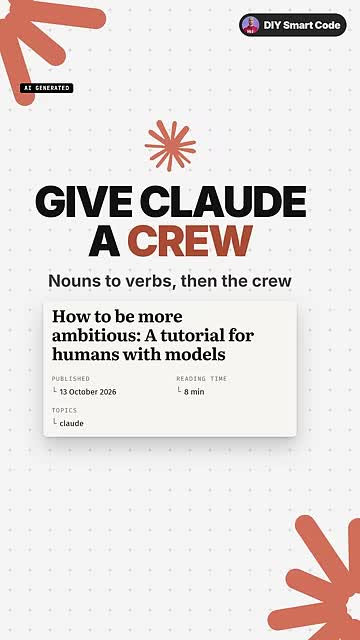
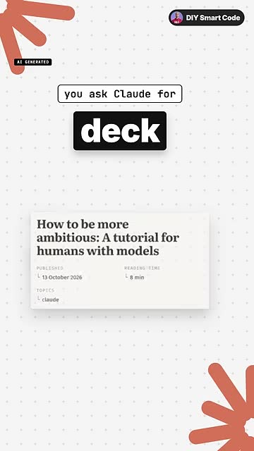
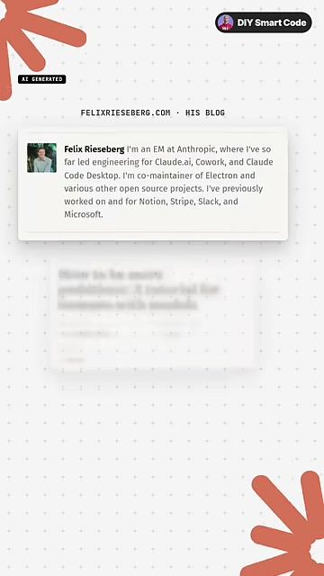
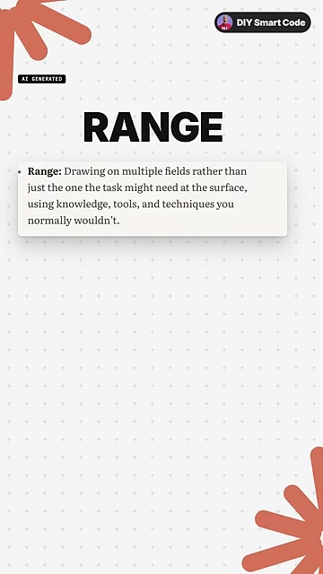
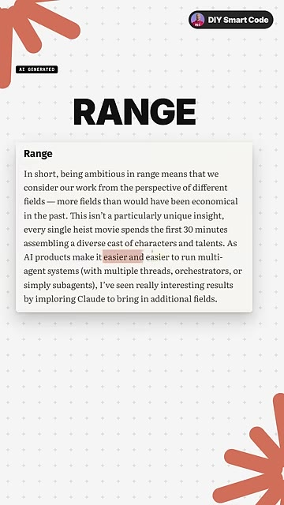
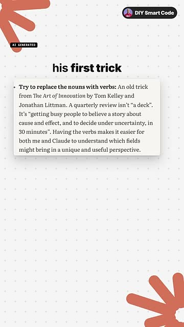
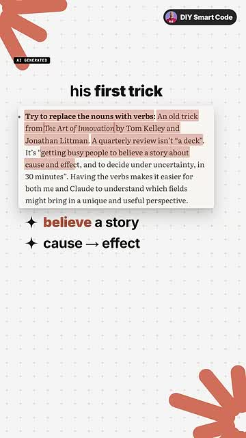
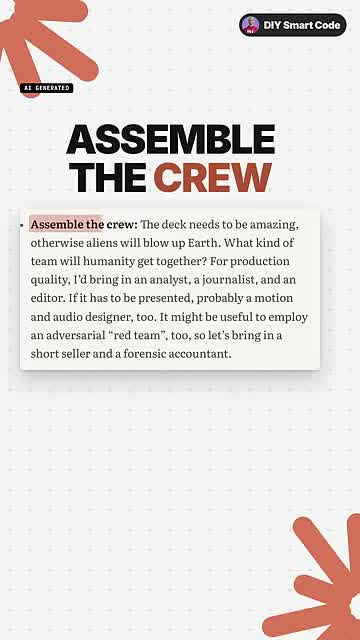
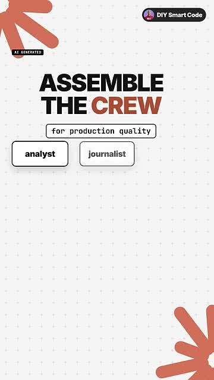
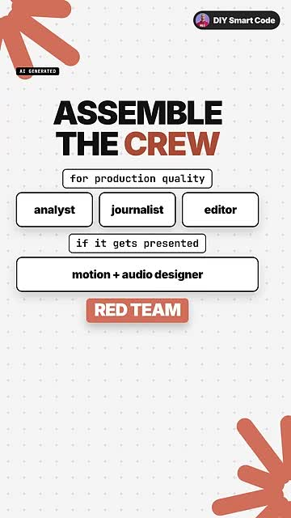
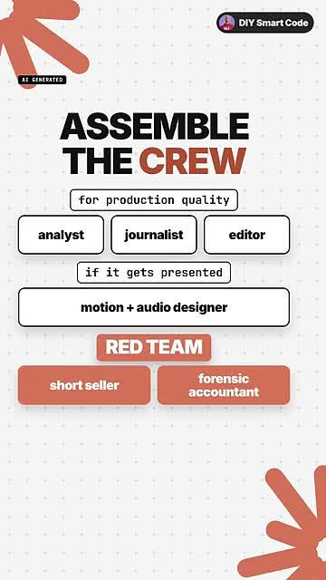
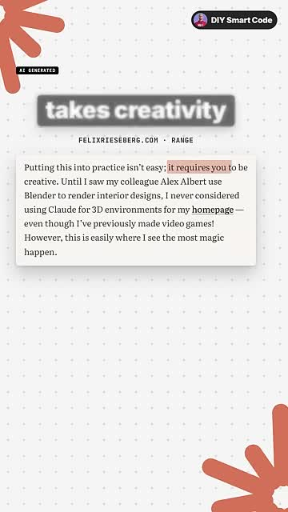
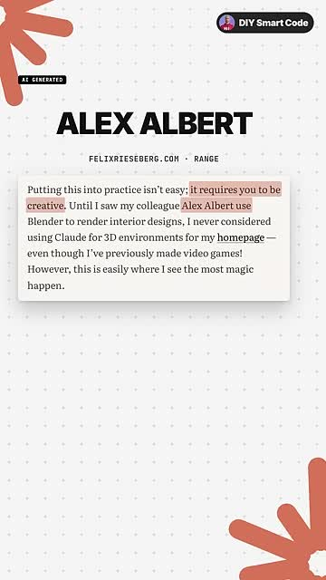
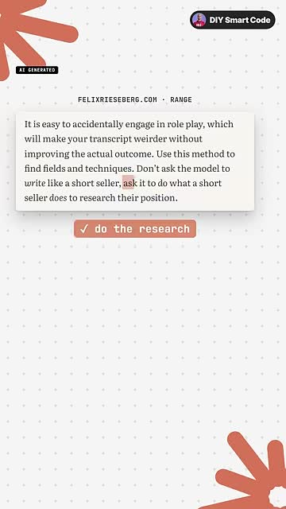
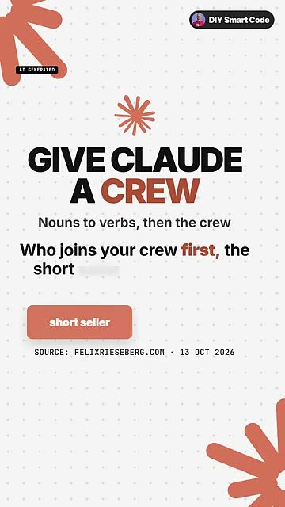
Mermaid of the video graph (render_graph.py)
flowchart LR
hook_card["Nouns to verbs, then the crew"]
deck_board["Deck"]
felix_card["Felix Rieseberg"]
range_board["Range"]
trick1_board["his first trick"]
crew_board["Assemble the crew"]
redteam_board["Red team"]
albert_board["Alex Albert"]
homepage_capture["Homepage captured 2026"]
nextask_board["before your next big ask"]
source_card["Source felixrieseberg.com 13 Oct 2026"]
felix("Felix Rieseberg")
anthropic("Anthropic")
range("range")
multiagent("multi-agent setups")
art_innovation("The Art of Innovation")
kelley("Tom Kelley")
littman("Jonathan Littman")
verbs("Replace the noun with verbs")
crew("Assemble the crew")
heist("heist movie")
production("analyst, journalist, editor")
presenters("motion and audio designer")
redteam("red team")
short_seller("short seller")
forensic("forensic accountant")
alex_albert("Alex Albert")
blender("Blender")
homepage3d("His homepage is a 3D room")
no_roleplay("Role-play makes the transcript weirder")
felix -->|works at engineering manager| anthropic
felix -->|names the ambition type| range
multiagent -->|makes cheap to practise| range
kelley -->|co-author of| art_innovation
littman -->|co-author of| art_innovation
art_innovation -->|source of trick 1| verbs
verbs -->|reveals which fields to add| range
heist -->|analogy for trick 2| crew
crew -->|production-quality members| production
crew -->|if presented| presenters
crew -->|adversarial members| redteam
redteam -->|includes| short_seller
redteam -->|includes| forensic
alex_albert -->|used to render interior designs| blender
blender -->|inspired Claude for 3D environments| homepage3d
no_roleplay -->|guardrail on how to use the crew| crew
verbs -->|step 1 then step 2| crew
range_board -->|on-screen title for| range
crew_board -->|on-screen title for| crew
albert_board -->|on-screen title for| alex_albert
homepage_capture -->|screen evidence for| homepage3d
7 · Derivatives
| # | Asset | Audience | Effort | Built from |
|---|---|---|---|---|
| 1 | One-pager: Verbs, then the Crew (A4 PDF with the method card + prompt template) | Client teams who prepare decks or reports | S (1–2 h) | method-card, quotes-sources |
| 2 | Workshop exercise (45 min): pairs turn their next deliverable into verbs, name a crew, run a red team, then compare outputs with and without the crew | Feldspar AI Show and Tell; client workshops | M (half a day) | method-card, worked example |
| 3 | Claude Code subagent pack: .claude/agents/ files for analyst, journalist, editor, short-seller and forensic-accountant, each defined by a method, not a persona |
Builders using Claude Code / the Agent SDK | M (3–4 h + test) | feature-docs, method-card step 4 |
| 4 | Skill: range-crew-prompting (SKILL.md + prompt template + a checker that flags write like a … role-play phrasing) |
Internal bot team | M | method-card, quotes P21/P22 |
| 5 | Slide pair for a 10-minute talk: narrator vs source table (how faithfully a Short retells a blog post) | Presentation-skills audience | S | words-vs-sources |
| 6 | Prompt pack: 5 noun-to-verbs rewrites (deck, report, landing page, hiring plan, board memo) | Anyone prompting models | S | method-card template |
| 7 | Short-to-source audit checklist: a reusable gate (captions + audio diff + narration-vs-post diff) for any explainer Short | Research / content QA | S (already scripted) | created-tools/ |
| 8 | Expert reading list: Felix's post plus everything it cites (Tao, Collison's Fast, Locke and Latham, Inner Game of Tennis, The Art of Innovation) | Leaders on the ambition theme | S | knowledge-graph |
Claims register (VERIFIED / UNVERIFIED / NOT FOUND)
Status key: VERIFIED = the exact fact is in a saved source we fetched (file named). UNVERIFIED = plausible or partly supported, not proven. NOT FOUND = we looked and no source has it. We never guess names or facts.
| # | Claim (who makes it) | Status | Evidence (saved file / gate) |
|---|---|---|---|
| K01 | The Short is Claude Prompts: Replace the Noun With Verbs, Then Assemble a Crew by DIY Smart Code, uploaded 2026-10-26, 118 s | VERIFIED | metadata-StbUAJvivDc.json (yt-dlp) |
| K02 | The expert is Felix Rieseberg | VERIFIED | named in the narration [00:04], on screen (frame-0005), and as author of the post: sources/src-felix-post.txt |
| K03 | He is an engineering manager (EM) at Anthropic | VERIFIED | post author box: I'm an EM at Anthropic; src-felix-about.txt, src-felix-linkedin.txt (title: Felix Rieseberg - Anthropic) |
| K04 | He has led engineering for Claude.ai, Cowork and Claude Code Desktop, and co-maintains Electron | VERIFIED | src-felix-post.txt (author box), src-felix-about.txt |
| K05 | The original post is How to be more ambitious: A tutorial for humans with models, felixrieseberg.com, 13 Oct 2026 | VERIFIED | src-felix-post.txt; page meta article:published_time 2026-10-13T14:48:44Z, modified 2026-10-16 |
| K06 | The post defines four kinds of ambition: Speed, Altitude, Depth, Range | VERIFIED | quotes-sources gate |
| K07 | Trick 1 (nouns to verbs) comes from The Art of Innovation by Tom Kelley and Jonathan Littman | VERIFIED (the attribution is in the post; the book and authors exist) | src-felix-post.txt, src-art-of-innovation-prh.txt, src-art-of-innovation-gbooks.txt |
| K08 | The nouns-to-verbs trick is actually in that book | UNVERIFIED | the book text was not available; the publisher blurb mentions cross-pollinating from other fields, not the verbs trick |
| K09 | Tom Kelley was general manager of IDEO; Littman is co-author | VERIFIED | src-art-of-innovation-gbooks.txt (publisher bios) |
| K10 | Alex Albert is a colleague at Anthropic | VERIFIED | post (my colleague Alex Albert); src-alex-albert-site.txt (I handle Claude Relations at Anthropic) |
| K11 | Alex Albert used Blender to render interior designs | VERIFIED as Felix's statement · UNVERIFIED independently | post; the nearest independent evidence is a house and walkthrough using Blender headless (src-alex-albert-nitter.txt, a mirror of X) |
| K12 | Felix's homepage is a 3D room now | VERIFIED | homepage raw HTML has a WebGL room (?room=1, room for the curious): src-felix-homepage.raw.html; On-screen capture dated 2026-10-21 at frame-0084 |
| K13 | Felix has made video games before | VERIFIED as his statement | post |
| K14 | Multi-agent setups (threads, orchestrators, subagents) are the enabling feature | VERIFIED as his statement; product mapping is our inference (confidence stated) | post + feature-docs-StbUAJvivDc.md |
| K15 | The advice is not model-specific, and it is personal advice, not Anthropic policy | VERIFIED (not model-specific: post) · the not-policy wording is the video description's | post; metadata-StbUAJvivDc.json description |
| K16 | The red team is three members (red team, short seller, forensic accountant) | NOT FOUND as stated | in the post, the short seller and forensic accountant are the red team: words-vs-sources P15 |
| K17 | The heist line belongs to trick 2 | Partly: the post puts it in the Range intro and the Short puts it before Assemble the crew | words-vs-sources P10 |
| K18 | Ask Claude for a deck and you get a deck (the hook) | NOT FOUND in the post (narrator's line) | words-vs-sources P01 |
| K19 | The narration is accurate to the audio | VERIFIED | Whisper small.en vs captions: 98.2% word similarity, 5 differences, all spelling (audio-vs-captions-StbUAJvivDc.json) |
| K20 | The video shows no drawn diagram, only typeset cards over blog screenshots | VERIFIED by inspection | contact-sheet-StbUAJvivDc.jpg, OCR of 107 frames |
| K21 | Which product Felix used for the crew | NOT FOUND | post names no product |
Checklist C01–C20 · done 18 · blocked 0 · skipped 0
| Id | Status | Evidence | Note |
|---|---|---|---|
| C01 | done | LOG-grok-bot.jsonl; RUN-REPORT-grok-bot.md#hashes | start 21:40:36 NZT; all 7 skill script hashes match spec section 3; zip sha256 22f2c4c8...0bb8 MATCH (repo copy and fresh raw-URL download) |
| C02 | done | metadata-StbUAJvivDc.json | title, channel DIY Smart Code, upload 2026-10-26, 118 s, description (names Felix and the post URL) |
| C03 | done | transcript-timed-StbUAJvivDc.jsonl | skill extract hit HTTP 429 (BLOCKED-StbUAJvivDc.md); created-tools/fetch_captions_retry.py got en-orig json3, 51 segments, first try |
| C04 | done | frames-StbUAJvivDc/ (107), contact-sheet-StbUAJvivDc.jpg | 1 fps deduped keyframes from yt_cloud_extract.py |
| C05 | done | ocr-StbUAJvivDc.jsonl | ocr_frames.py: 107 frames, 106 with text |
| C06 | done | transcript-audio-StbUAJvivDc.jsonl; audio-vs-captions-StbUAJvivDc.json | audio_route.py first blocked (no whisper), then crashed (PyAV API); installed faster-whisper (box), created audio_whisper_numpy.py; small.en 31 segs; captions vs audio 98.17%, 5 spelling diffs |
| C07 | done | ANSWER-StbUAJvivDc.md; commit 913f3c4 | first ANSWER proved 21:44:07 NZT, pushed 21:44:45 NZT (4 min 9 s after start) |
| C08 | done | graph-StbUAJvivDc.json; graph-gate-StbUAJvivDc.json | graph_gate pass: 30 nodes, 21 edges, 7 steps, 8 quotes, 5 onion layers, 0 failures; 2 vision nodes in human_check |
| C09 | done | proof-StbUAJvivDc.json; quote-evidence-StbUAJvivDc.jsonl | proof_run pass (quote_gate 0, graph_gate 0) |
| C10 | done | sources/src-felix-post.txt, src-felix-about.txt, src-felix-github.txt, src-felix-linkedin.txt, src-felix-x.txt | Felix Rieseberg, EM at Anthropic (post author box + about page) |
| C11 | done | words-vs-sources-StbUAJvivDc.md/.json; sources/src-felix-post.txt | post found and saved (HTTP 200); 23 narration/post pairs, 0 failures; 2 verbatim, 3 close, 13 paraphrase, 5 narrator-only; key difference P15 red-team grouping |
| C12 | done | knowledge-graph-StbUAJvivDc.json; sources/ | every cited person/book/org has a saved source; blender.org 403 -> Wikipedia; Tom Kelley wiki 404 -> publisher bios |
| C13 | done | feature-docs-StbUAJvivDc.md; sources/src-doc-*.txt | Claude subagents (high on capability, medium on surface); agent teams; MCP prerequisite; Blender connector low |
| C14 | done | knowledge-graph-check-StbUAJvivDc.json; created-tools/check_knowledge_graph.py | 47 nodes, 50 edges, pass; negative tests catch unsaved source + url mismatch |
| C15 | done | quotes-sources-gate-StbUAJvivDc.json | 11 source sections, 28 written quotes, 0 not found (skill quote_gate.py per source) |
| C16 | done | method-card-StbUAJvivDc.md | 6 steps, when to use, worked example (Acme QBR), paste-able prompt template |
| C17 | done | DERIVATIVES-StbUAJvivDc.md | 8 derivatives with audience and effort |
| C19 | done | DECISIONS-grok-bot.jsonl; LOG-grok-bot.jsonl; TOOLS-grok-bot.md; created-tools/ | decisions D01-D17, timed log, 10 created tools listed + tested (work/tool-tests.txt 7/7) |
All lane files
- .gitignore
- ANSWER-StbUAJvivDc.md
- BLOCKED-StbUAJvivDc.md
- BLOCKED-audio-StbUAJvivDc.md
- CHECKLIST-grok-bot.jsonl
- CLAIMS-StbUAJvivDc.md
- DECISIONS-grok-bot.jsonl
- DERIVATIVES-StbUAJvivDc.md
- LANE-README-grok-bot.md
- LOG-grok-bot.jsonl
- RUN-REPORT-grok-bot.md
- TOOLS-grok-bot.md
- audio-vs-captions-StbUAJvivDc.json
- captions-raw-StbUAJvivDc.en-orig.json3
- contact-sheet-StbUAJvivDc.jpg
- cost-StbUAJvivDc.json
- created-tools/audio_whisper_numpy.py
- created-tools/build_graph_StbUAJvivDc.py
- created-tools/build_index_html.py
- created-tools/build_knowledge_graph.py
- created-tools/check_knowledge_graph.py
- created-tools/compare_audio_captions.py
- created-tools/fetch_captions_retry.py
- created-tools/lane_log.py
- created-tools/narration_vs_post.py
- created-tools/quotes_sources_gate.py
- created-tools/run_all_grok_bot.sh
- created-tools/save_source.py
- created-tools/test_created_tools.sh
- diagram-StbUAJvivDc.mmd
- feature-docs-StbUAJvivDc.md
- graph-StbUAJvivDc.json
- graph-gate-StbUAJvivDc.json
- index.html
- knowledge-graph-StbUAJvivDc.json
- knowledge-graph-check-StbUAJvivDc.json
- metadata-StbUAJvivDc.json
- method-card-StbUAJvivDc.md
- ocr-StbUAJvivDc.jsonl
- onion-StbUAJvivDc.md
- proof-StbUAJvivDc.json
- quote-evidence-StbUAJvivDc.jsonl
- quotes-sources-StbUAJvivDc.md
- quotes-sources-gate-StbUAJvivDc.json
- sources/src-alex-albert-nitter.txt
- sources/src-alex-albert-site.txt
- sources/src-anthropic-company.txt
- sources/src-anthropic-creative-work.txt
- sources/src-art-of-innovation-gbooks.txt
- sources/src-art-of-innovation-ideo.txt
- sources/src-art-of-innovation-prh.txt
- sources/src-blender-connector-academy.txt
- sources/src-blender-wiki.txt
- sources/src-blender.txt
- sources/src-collison-fast.txt
- sources/src-doc-cc-agent-teams.txt
- sources/src-doc-cc-mcp.txt
- sources/src-doc-cc-subagents.txt
- sources/src-doc-mcp-intro.txt
- sources/src-doc-sdk-subagents.txt
- sources/src-doc-subagents-article.txt
- sources/src-electron.txt
- sources/src-felix-about.txt
- sources/src-felix-github.txt
- sources/src-felix-homepage.txt
- sources/src-felix-linkedin.txt
- sources/src-felix-post.txt
- sources/src-felix-x.txt
- sources/src-gizmodo-planet.txt
- sources/src-ideo.txt
- sources/src-locke-latham-pdf.txt
- sources/src-tao-math2.txt
- sources/src-wiki-bannister.txt
- sources/src-wiki-collison.txt
- sources/src-wiki-dantzig.txt
- sources/src-wiki-forensic-accounting.txt
- sources/src-wiki-goya.txt
- sources/src-wiki-heist-film.txt
- sources/src-wiki-ideo.txt
- sources/src-wiki-inner-game.txt
- sources/src-wiki-linux-history.txt
- sources/src-wiki-michelangelo.txt
- sources/src-wiki-red-team.txt
- sources/src-wiki-sawe.txt
- sources/src-wiki-self-efficacy.txt
- sources/src-wiki-short-selling.txt
- sources/src-wiki-tao.txt
- sources/src-wiki-tom-kelley.txt
- sources/src-yt-channel-diysmartcode.txt
- transcript-audio-StbUAJvivDc.jsonl
- transcript-plain-StbUAJvivDc.txt
- transcript-timed-StbUAJvivDc.jsonl
- words-vs-sources-StbUAJvivDc.json
- words-vs-sources-StbUAJvivDc.md